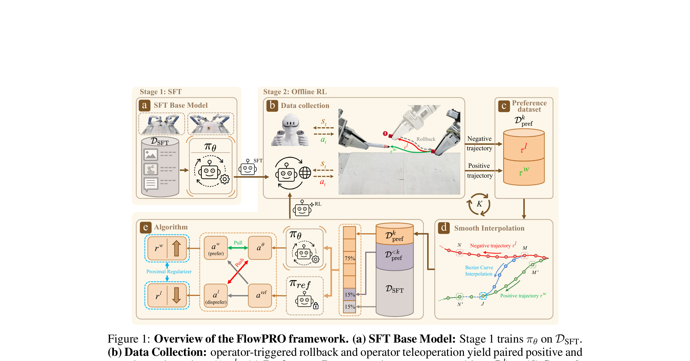

FlowPRO: Reward-Free Reinforced Fine-Tuning of Flow-Matching VLAs via Proximalized Preference Optimization
Wu 等 · Shanghai AI Lab / Tsinghua · 2026 · arXiv:2606.05468 · Zotero FUE6EV8G
它绕开显式 reward 与 critic，但仍利用失败信息；‘reward-free’不是没有反馈，而是反馈以成对偏好出现。
§1 Introduction：作者为什么必须做这篇工作
真实机器人 RL 最难的不只是采样，而是奖励：自动成功检测器可能被策略钻空子，训练 critic 又需要足够正负轨迹。FlowPRO 改问一个更工程化的问题：如果操作者已经在失败时接管，能否把同一次干预自然变成偏好对，而不再手写 reward？
系统在失败点执行 intervention-and-rollback：失败前轨迹作为负样本，操作者纠正后成功轨迹作为正样本。RPRO 为 flow action head 设计对比偏好目标，再加显式 proximal regularizer 固定隐式奖励的绝对尺度，避免普通 Flow-DPO 只拉大正负差而无界漂移。
展开原文 · 核心动机
“a reward-free offline reinforced fine-tuning framework”
§2 Related Work：它接在哪些路线之后
DPO/IPO 用成对偏好对齐语言模型，Flow-DPO 把同样思想移到连续流速度，但机器人动作是逐状态、长时序的。DAgger 收集纠正动作，却主要做监督克隆，不能充分利用失败轨迹。
FlowPRO 把 rollback 形成的同源正负轨迹对齐到状态级监督，并用 Smooth Interpolation 填补稀疏干预之间的状态。它属于离线偏好优化，不需要在线 critic。
§3 问题设定：状态、动作与反馈
基座 VLA 先 SFT；部署时操作者在失败点回滚并给出纠正，得到共享前缀的 winner/loser。RPRO 比较两条 flow velocity 的隐式偏好，同时限制策略不离开参考模型。
§4 方法总览：沿原图走一遍
上一节确定了学习接口；现在看论文原图，追踪观测如何变成动作、环境反馈又如何回到可训练模块。

1. SFT 得到可执行的 flow VLA
先用监督数据训练可执行的 flow VLA，并冻结一份 reference policy。这个 reference 同时提供部署起点与 proximal 锚点，后续偏好优化不能只提高新任务而无限偏离原有动作分布。
输入是什么：随机噪声，以及当前画面、语言指令或机器人状态等条件信息。噪声只是生成过程的起点，不是机器人真的要执行的动作。
这一步究竟做什么：先用监督数据训练可执行的 flow VLA，并冻结一份 reference policy。这个 reference 同时提供部署起点与 proximal 锚点，后续偏好优化不能只提高新任务而无限偏离原有动作分布。
输出到哪里：可发送给机器人控制器的动作，以及执行后重新观测到的真实状态。这个结果会交给下一步“干预与回滚收集同源正负轨迹”继续处理。
为什么不能省略：机器人动作会改变下一次观测；只有执行后重新读取现实，才能发现预测误差并阻止错误连续累积。
2. 干预与回滚收集同源正负轨迹
操作者发现失败后回滚到相近状态，再遥操作完成。失败分支与纠正分支共享前缀，天然形成 winner/loser 对；相比随意配对两条轨迹，它更能把差异归因到关键动作。
输入是什么：来自上一步“SFT 得到可执行的 flow VLA”的产物：可发送给机器人控制器的动作，以及执行后重新观测到的真实状态。本步骤还会按论文设置读取当前条件、时间步或训练信号。
这一步究竟做什么：操作者发现失败后回滚到相近状态，再遥操作完成。失败分支与纠正分支共享前缀，天然形成 winner/loser 对；相比随意配对两条轨迹，它更能把差异归因到关键动作。
输出到哪里：经过本步骤处理、含义更明确的中间结果。这个结果会交给下一步“Smooth Interpolation 生成密集状态配对”继续处理。
为什么不能省略：它承担上下两步之间的接口；缺少它，前一步产生的信息无法以正确格式或正确含义传到下一步。
3. Smooth Interpolation 生成密集状态配对
人工干预只覆盖少数时刻，Smooth Interpolation 在相邻状态间构造平滑的正负动作监督。输出是密集的状态级偏好对，使 flow velocity 在整段恢复轨迹上都有梯度。
输入是什么：来自上一步“干预与回滚收集同源正负轨迹”的产物：经过本步骤处理、含义更明确的中间结果。本步骤还会按论文设置读取当前条件、时间步或训练信号。
这一步究竟做什么：人工干预只覆盖少数时刻，Smooth Interpolation 在相邻状态间构造平滑的正负动作监督。输出是密集的状态级偏好对，使 flow velocity 在整段恢复轨迹上都有梯度。
输出到哪里：一个或多个候选未来、动作或轨迹，以及必要的中间状态。这个结果会交给下一步“RPRO 对比优化并用 proximal 项锚定基座”继续处理。
为什么不能省略：它承担上下两步之间的接口；缺少它，前一步产生的信息无法以正确格式或正确含义传到下一步。
4. RPRO 对比优化并用 proximal 项锚定基座
RPRO 拉高 winner 相对 loser 的隐式分数，同时用 proximal 项约束 velocity 与 reference 的绝对距离。前者利用失败信息，后者阻止普通 Flow-DPO 通过无界放大分数实现 reward hacking。
输入是什么：来自上一步“Smooth Interpolation 生成密集状态配对”的产物：一个或多个候选未来、动作或轨迹，以及必要的中间状态。本步骤还会按论文设置读取当前条件、时间步或训练信号。
这一步究竟做什么：RPRO 拉高 winner 相对 loser 的隐式分数，同时用 proximal 项约束 velocity 与 reference 的绝对距离。前者利用失败信息，后者阻止普通 Flow-DPO 通过无界放大分数实现 reward hacking。
输出到哪里：经过本步骤处理、含义更明确的中间结果。这是图中这条链路的最终产物，随后会进入真实执行、模型更新或指标评测。
为什么不能省略：它把前面得到的内部结果落实为可执行动作、可训练模型或可解释指标，完成从方法到结果的最后一步。
§5 机制细拆：为什么这个接口可能有效
偏好信号在共享状态上直接比较好/坏动作，避免把整条成功只归因到最后一步。
更新 flow action head；参考策略保持冻结，proximal 项控制漂移。
它绕开显式 reward 与 critic，但仍利用失败信息；‘reward-free’不是没有反馈，而是反馈以成对偏好出现。
§6 目标函数：公式逐项读
下面的教学化表达抓住论文的主要更新方向；读它时不要只看符号，要检查回报作用在哪个变量、哪些部分保持冻结。
- $\Delta_w-\Delta_l$
- winner 与 loser 在隐式偏好分数上的差。
- $\beta$
- 偏好温度，决定拉开正负样本的强度。
- $v_\theta$
- 待训练的 flow velocity。
- $\lambda\|v_\theta-v_{ref}\|^2$
- proximal 锚点，阻止隐式奖励无界放大和能力遗忘。
§7 训练与评测：数字在什么条件下成立
四个长程双臂真机任务；比较 SFT、DAgger 类纠正、plain Flow-DPO 与完整 FlowPRO，并消融 rollback、插值和 proximal 项。
| 学习接口 | 基座 VLA 先 SFT；部署时操作者在失败点回滚并给出纠正，得到共享前缀的 winner/loser。RPRO 比较两条 flow velocity 的隐式偏好，同时限制策略不离开参考模型。 |
|---|---|
| 信用分配 | 偏好信号在共享状态上直接比较好/坏动作，避免把整条成功只归因到最后一步。 |
| 更新范围 | 更新 flow action head；参考策略保持冻结，proximal 项控制漂移。 |
| 实验覆盖 | 四个长程双臂真机任务；比较 SFT、DAgger 类纠正、plain Flow-DPO 与完整 FlowPRO，并消融 rollback、插值和 proximal 项。 |
§8 结果怎么读：证据与归因
论文报告完整 FlowPRO 在四项任务取得最高成功率；关键证据是 plain Flow-DPO 的 reward hacking/漂移现象，以及 proximal 项和状态插值的独立贡献。
§9 复现与工程检查
正负轨迹必须共享可比状态；记录干预触发规则与 rollback 精度；检查偏好分数绝对值而不只看差值；保留基座任务回归测试。
- 先复现冻结的 SFT/BC 基线，再打开 RL 或偏好更新。
- 同时记录环境步、墙钟时间、人工干预、策略版本和推理延迟。
- 逐任务保存失败轨迹，避免平均成功率掩盖分布偏移。
§10 适用边界与研究启发
依然需要操作者在线判断失败并纠正；回滚对不可逆任务困难；偏好只保证相对好坏，不自动提供安全约束。